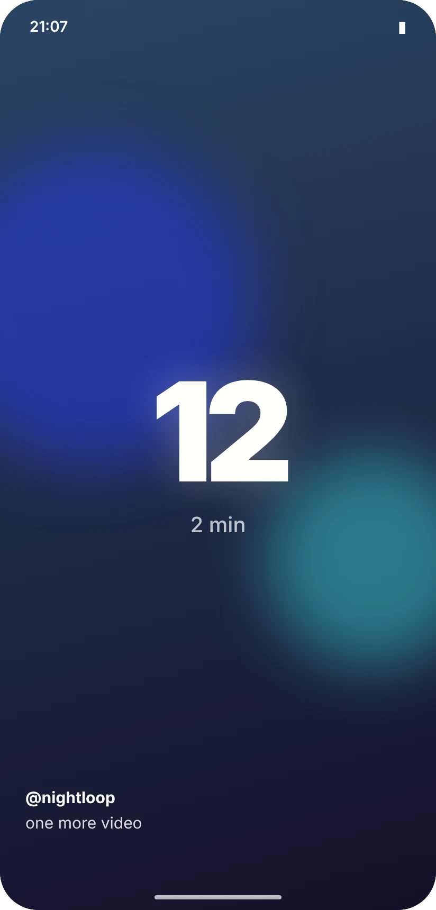
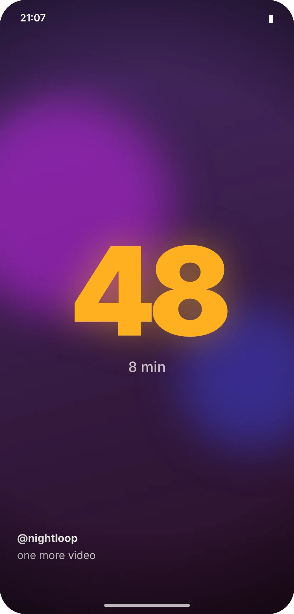
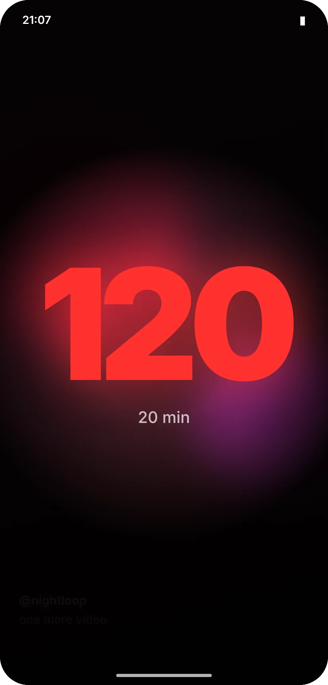
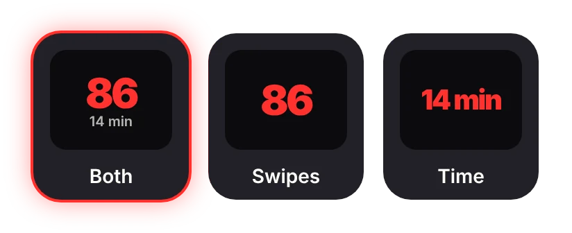
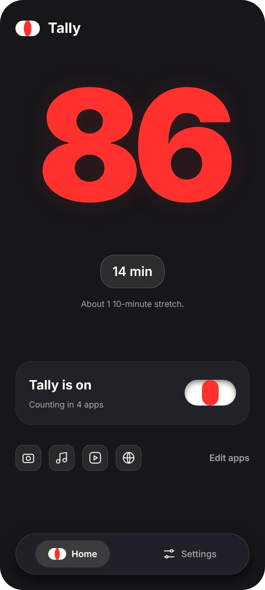

One number, in the middle of the screen.
Tally counts swipes in the apps you pick and shows the total over them. The number is semi-transparent, and touches go through to the app underneath.
It gets louder.
The number starts small and white. As the count climbs it grows, turns amber, then red. Every 50th swipe it sends out a ring.
The exact steps and timing may change before release.



Swipes, time, or both.
The default shows swipes big with the minutes small under them. You can switch to swipes only, or to time only.
Time counts only while one of your apps is in front. After a short break the count starts again.

The home screen.
Open Tally to see your current count and time, a switch to turn it on or off, and the apps it watches.
Once you pass 10 minutes, it adds one plain line about what that time could have been, such as a short walk.
There are no streaks, no best day and no score. It only shows where you are now.

Hear when Tally is ready.
One email when it is available. Nothing else.
Your address goes into a Google Sheet kept by Jergusino and is used only to tell you when Tally is ready. More on your email.